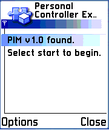
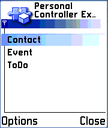
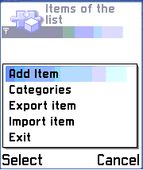

This example demonstrates Personal Information Management (PIM).
The aim of this example is to demonstrate Personal Information Management (PIM) in the Mobile Phones using Java™ language.
Wireless devices often have support for managing the end user’s personal information. Management of this kind of data (contacts, calendar data and ToDo lists) is referred to as Personal Information Management (PIM). The PIM optional package brings information management available to Java™ Platform Micro Edition applications by providing the required programming interfaces. The PIM optional package (along with File Connection Optional Package) is defined in the JSR-75.
This example MIDlet demonstrates personal information management with Mobile Phones using the java programming language. The MIDlet gives a simple but fairly extensive demonstration of basic PIM usage.
To fully understand this example, you should have knowledge of MIDP development or a basic understanding of Java programming. The document JSR-75, PDA Optional Packages for the Java™ Platform Micro Edition explains how the PIM API can be utilized.
This example needs a JSR75 enabled device in order to run.
You will also need Java™ Platform Standard Edition SDK installed and set up on your PC. You can downloaded it from the following location:
You may also want to install an integrated development environment (IDE), such as Borland JBuilder, available from Borland’s Web site, or Sun Java Studio Mobility, available from Sun’s web site. Note: make sure the IDE of you use supports JSR-75. For download locations, see the links below:
http://www.borland.com/jbuilder/
http://wwws.sun.com/software/download/products/41085de1.html.
For instructions on how to integrate the SDK for use with the different IDE tools, see the Installation and Configuration Guide provided with the SDK installation package.
JSR-75 API references and related information for utilizing the File Connection Optional Package can be found from the following location:
http://developers.sun.com/techtopics/mobility/apis/ttips/fileconnection/
MIDlets are compiled using the standard Java SDK. For compiling the application, you can use the IDE of your choice(Eclipse, Netbeans, JBuilder 2005 Developer).
The application first checks that the optional package that provides PIM functionality is available. If the package is not available an error message is shown and the program exits. The application also verifies form the user if it is ok to read his or her files.
Checking optional package JSR-75

The following screen appears when the MIDlet is started.
StartUp Screen

Selecting Contact, the user can add contact items to his or her database.
Contacts menu

The Contacts item main screen looks like above. Changes are saved by selecting Menu.
Contacts data item
The user can edit the following fields:
- NickName
- Revision time/date
- Formatted Address
- Note (for some text input)
- Public Key String
- URL
- Formatted name (displayed in contacts main screen when saved)
- Organization
- UID (This property is identified by the property name UID)
- Title
- Telephone number
- Birthday time/date
When editing Revision time/date or Birthday time/date, a calendar screen for the current month appears. Changes are saved using the Save button. The date can be changed using the arrow keys.
Birthday edit screen

The user can add as many contacts as desired. Contact items are shown on the main screen of contact selection.
Multiple contacts saved

The PersonalController MIDlet allows the user to search items in selected areas. The search field can be found from the contacts main screen.
Menu field in contacts main screen

Search screen

Categories are logical groupings of items in a PIM item list. Each PIMList support zero or more categories. Existing categories in the ContactList can be viewed, modified or removed. New categories can be created. Contacts have to be created before creating categories.
By pressing associated items, all contacts belonging to a specified category are listed.
Event items main screen displayed below contains following functionality:
- Export item
- Repeat rules
- Import item
- Add item
- Categories
Main screen of Events

Like in contacts, the PersonalController application also allows the user to add events. The main screen of an event item is shown in the figure below.
Main screen of event display

The user can edit the following fields:
- Alarm
- Revision time/date
- Summary (can be seen in main screen of events)
- Note
- End/start time
- UID
- Location of event
The Alarm field specifies a relative time for an alarm for this event. Data for this field is given with an integer data type. The alarm is indicated in seconds and derived by subtracting the alarm value from every date/time occurrence of this event. For example, if the value entered in this field is 600, the alarm first occurs 600 seconds before the date/time value specified by event.
The user can add as many items as desired. Items are shown in the main screen of the event list.
PIM Event Item list

The PersonalController application enables the user to import and export items from other file systems. The MIDlet suggests names such as vcard.txt or vcalendar.txt, depending on type of list. The suggested name can be changed simply by entering the desired name in text field. Importing and exporting can also be done from other file systems in the desired encoding format.
Import/export screen

A Repeat Rule represents a description for a repeating pattern for an Event item. Conceptually, the fields of a Repeat Rule can be grouped into two categories:
Frequency of a Repeat Rule
Fields that modify or refine the Frequency of a Repeat Rule
This means that the calculation of applicable dates in a Repeat Rule start with a repeating frequency (such as weekly, daily, yearly, or monthly) and then other fields refine or modify the repeat characteristics according to the field (for example, the COUNT field specifies that only X number of occurrences are repeated at the given frequency). The first category contains only FREQUENCY, while all other repeat rule fields are classified in the second category.
Repeat Rules

From the Menu the user can save changes or apply a new repeat operation for this item with pre-defined values.
The user can edit following fields:
- Frequency
- Count
- Interval
- End date
- Day in a week
- Day in a month
- Day in a year
- Week in a month
- Month in a year
The ToDo lists allow the user to create or import new notes. The figure below shows the main screen of the ToDo lists menu:
ToDo list

The categories and import/export functions of ToDo list offer, basically, the same operations for adding and exporting items as described, for example in 3.4 above. The figure below shows the Add item screen.
ToDo item

The different fields are explained below:
Priority: Can be set between 0-9. Zero specifies an undefined priority, one specifies the highest priority and nine the lowest priority.
Summary: Text to be displayed the in main screen of ToDo lists
Note: Field for the user’s own notes
Completion date: Tasks can be set to be completed up until the current date
Revision: Defines the desired revision date
Due: Defines the desired due date
Completed: Yes/No
Personal information data is included in three types of items: Contact, Event and ToDo items, which each hold data for different purposes. A group of items of the same type forms a list of corresponding type (either a ContactList, EventList or ToDoList). As illustrated in the figure below, PIM lists may include, for example, several lists of the type EventList, one list of type ContacList and one list of type ToDoList. All the items are members of a list belonging to one of the three list types mentioned above. Each list contains various items of corresponding item type.

The data in a PIM item is defined in and accessed via fields. Each PIM item incorporates a set of these fields. A field is a grouping of data that share similar characteristics. For example, a contact item typically includes the following fields:
- FORMATTED_NAME represents a formatted version of a name for the contacts entry.
- NAME specifies the name for this contact.
- TEL specifies the telephone number.
Each field may have one or more values associated with it (it is also possible that no value has been associated with it, for example, the field is empty). Each of these values of the same field has got the same data type (INT, BINARY, BOOLEAN, DATE, STRING_ARRAY or STRING). Attributes can also be associated with data values to further describe the values (such as ATTR_HOME, ATTR_WORK. For example, home e-mail address would have the attribute ATTR_HOME and work email address would have the attribute ATTR_WORK.). There is also a descriptive label for each field for more detailed description than the name of the field.
A PIM item is always created by a PIM list and is associated with that list for the rest of its life cycle. PIM items are accessed through lists (in other words, the item is accessed through the list that the item is associated with).
Categories represent logical groupings of items in the ContactList. For example, there can be a category “workmates” in the ContactList. Each Contact item representing a friend from work could be associated with the “workmates” category.
Categories are owned by ContactList and can be created, deleted and modified.
Items can be searched by matching item or string value.
If items are searched by item, all the items whose field values match to the field values of the matching item are returned in an Enumeration by method PIMList.items (PIMItem mathcingItem). Only fields having a value in the matchingItem are used in the comparison. If none of the fields have a value all items of the list are returned in the Enumeration.
If items are searched by string value all the items that have the a matching string value in a field are returned.
There are a number of possibilities for defining the matching criteria of a search. For more detailed description, see the PIM API specification.
vCard and vCalendar provide formats for interchanging informal information. vCard is an electronic business card (Contact items can be easily imported/exported using vCard format). vCalendar is an electronic calendaring and scheduling exchange format (Event and ToDo items can be easily imported/exported using vCalendar format).
PersonalController supports importing and exporting items via a serial format mechanism. Items are imported and exported in vCard and vCalendar formats.
A RepeatRule encapsulates a repeating pattern for an Event element. The occurrence of an Event can be defined by associating a RepeatRule to the corresponding Event item. The supported fields of a RepeatRule are defined within the EventList. Each Event item can be associated with one RepeatRule at a time (associations can be updated, however).
A principled example of a RepeatRule: Event occurs every week on Wednesday at 2.00 p.m. for the next two months.